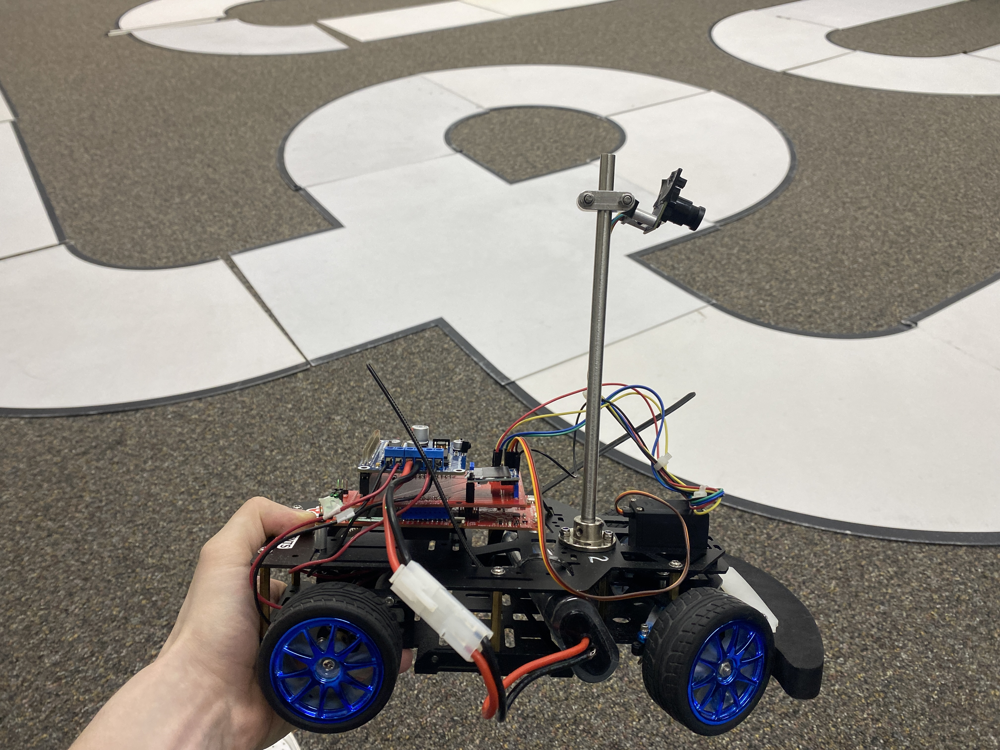

This project involved designing and implementing the control system for a small autonomous RC car as part of a course final project. At the end of the semester, all student teams raced their cars against one another. Each car shared the same hardware platform, meaning that performance came down entirely to the quality of the control system software.
The RC car was equipped with an MSP432 microcontroller and a line scan camera. The car was designed to follow a black-and-white track, with the black boundaries marking the edges of the course. The objective was to process the camera data in real time to keep the car centered on the track and prevent it from veering off course.
In class, students were tasked with implementing a PID controller that could adapt to any track layout, ensuring smooth and stable navigation. For the final race, however, the control system could be modified or replaced with alternative approaches, such as a bang-bang controller, to maximize speed and performance. This competitive aspect emphasized both the fundamentals of control theory and the creativity of applying different strategies under real-world constraints.
The first task in developing the RC car’s control system was processing the camera data from the 128-pixel line scan sensor. Raw pixel values contained a clear transition between the black edge of the track and the white interior, but noise and irregularities needed to be reduced before they could be used for control. To achieve this, a derivative filter was applied to the data, which highlighted sharp changes in intensity and made it easier to detect the black–white boundaries of the track.
Once the left and right edges were identified, the midpoint of the track could be calculated. By comparing this midpoint with the true center pixel of the camera (pixel 64), the car could determine whether it was drifting too far left or right. This error value was then fed into the steering controller: if the midpoint deviated from center, the car adjusted its steering angle to bring itself back to the middle of the lane. This edge detection and midpoint calculation formed the foundation for stable, autonomous driving, and using this method the RC car was able to successfully navigate around a circular track.
After establishing reliable edge detection and midpoint calculation, the next step was implementing a PID controller to regulate steering. The error signal, defined as the difference between the calculated midpoint of the track and the actual center pixel of the camera, was fed into the PID loop. In addition to the positional offset, the rate of change in the midpoint position was also considered, allowing the controller to account for both steady drift and rapid changes in track curvature.
The proportional term provided immediate corrections to steering based on the size of the error, while the derivative term smoothed out sharp adjustments by dampening sudden changes. The integral term was used carefully, as excessive accumulation could lead to oscillations, but when tuned properly it helped correct small, persistent offsets. To further improve stability, variable speed control was added: when the error grew large—indicating that the car was off-center or approaching a sharp turn—the car automatically slowed down, giving the controller more time to recover. Once the error decreased, the car sped back up, balancing safety with performance. Through iterative testing and parameter tuning, the PID controller was able to keep the car centered smoothly around the track, adapting to turns and maintaining stability at higher speeds.